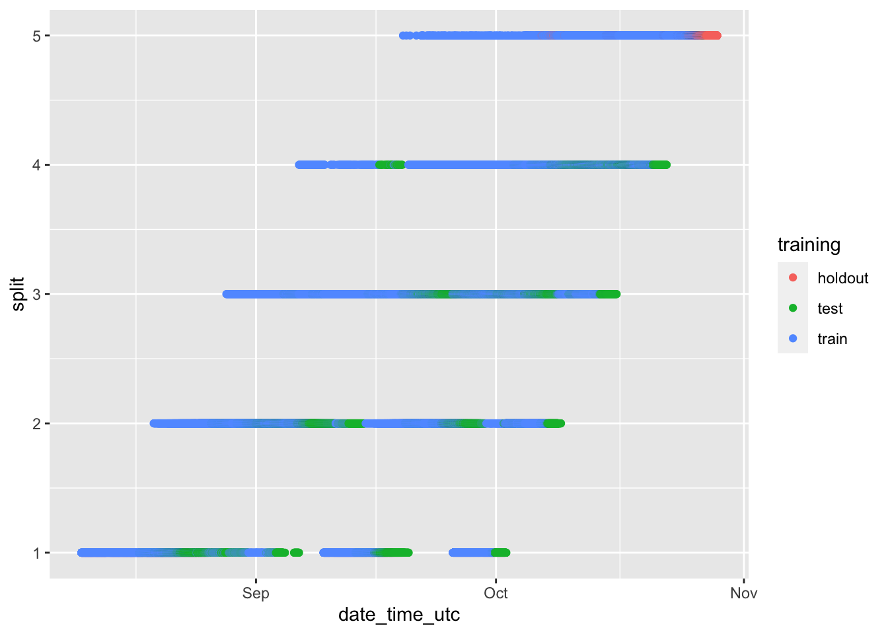
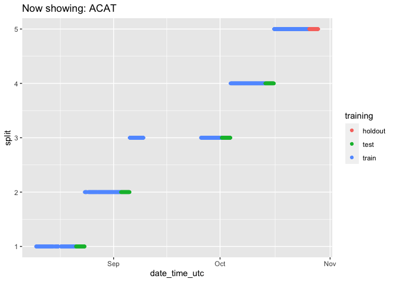
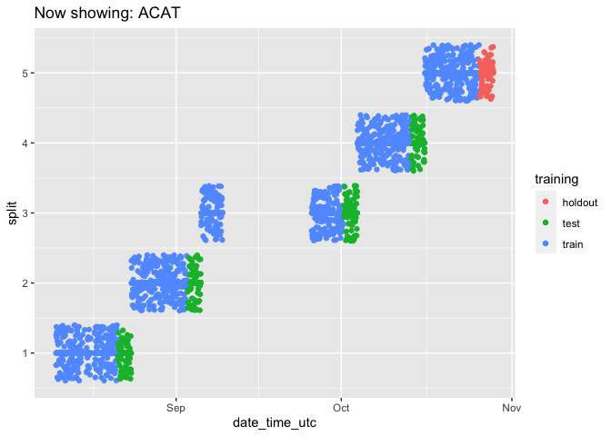

Section - 3 Data Prep
[ADD HERE]
3.1 Remove Nulls
[ADD HERE]
cryptodata <- na.omit(cryptodata)3.2 Calculate price_usd Column
[ADD HERE]
Calculate the price_usd using the order books data and taking the cheapest price available from the ask side where at least $15 worth of the cryptocurrency are being sold.
[ADD HERE]
cryptodata <- mutate(cryptodata,
trade_usd_1 = ask_1_price * ask_1_quantity,
trade_usd_2 = ask_2_price * ask_2_quantity,
trade_usd_3 = ask_3_price * ask_3_quantity,
trade_usd_4 = ask_4_price * ask_4_quantity,
trade_usd_5 = ask_5_price * ask_5_quantity)We can look at an example [ADD HERE]
head(select(cryptodata, symbol, date_time_utc, ask_1_price, ask_1_quantity, trade_usd_1))## # A tibble: 6 x 5
## symbol date_time_utc ask_1_price ask_1_quantity trade_usd_1
## <chr> <dttm> <dbl> <dbl> <dbl>
## 1 DCN 2020-10-23 12:05:25 0.00000424 19505000 82.7
## 2 BZRX 2020-10-23 12:05:25 0.124 1365. 170.
## 3 UTT 2020-10-23 12:05:24 0.125 256. 32.1
## 4 ETP 2020-10-23 12:05:23 0.193 50.4 9.74
## 5 DAY 2020-10-23 12:05:20 0.262 3001 785.
## 6 DRT 2020-10-23 12:05:19 0.00167 8130 13.5If none of the top 5 orders on the order book ask side are for at least $15, exclude the row. [ADD HERE]
cryptodata <- mutate(cryptodata,
price_usd = case_when(
cryptodata$trade_usd_1 >= 15 ~ cryptodata$ask_1_price,
cryptodata$trade_usd_2 >= 15 ~ cryptodata$ask_2_price,
cryptodata$trade_usd_3 >= 15 ~ cryptodata$ask_3_price,
cryptodata$trade_usd_4 >= 15 ~ cryptodata$ask_4_price,
cryptodata$trade_usd_5 >= 15 ~ cryptodata$ask_5_price))Now remove rows where we couldn’t find a price above $15 for any of the 5 cheapest orders in the order book.
cryptodata <- na.omit(cryptodata)This step removed 19195 rows on the latest run.
3.3 Any gaps?
[ADD HERE]
3.3.1 Convert to tsibble
… the tsibble package [@R-tsibble]…
3.3.1.1 Convert to hourly data and get rid of minutes and seconds
… anytime() from the anytime package [@R-anytime]…
cryptodata$ts_index <- anytime(paste0(cryptodata$pkDummy,':00:00')) … as_tsibble() from the tsibble package [@R-tsibble]…
cryptodata <- as_tsibble(cryptodata, index=ts_index, key=symbol)3.3.2 Scan gaps
scan_gaps(cryptodata)## # A tsibble: 30,591 x 2 [1h] <America/Denver>
## # Key: symbol [185]
## symbol ts_index
## <chr> <dttm>
## 1 AAB 2020-10-16 22:00:00
## 2 AAB 2020-10-16 23:00:00
## 3 AAB 2020-10-17 00:00:00
## 4 AAB 2020-10-17 01:00:00
## 5 AAB 2020-10-17 02:00:00
## 6 AAB 2020-10-17 03:00:00
## 7 AAB 2020-10-17 04:00:00
## 8 AAB 2020-10-17 05:00:00
## 9 AAB 2020-10-17 06:00:00
## 10 AAB 2020-10-17 07:00:00
## # ... with 30,581 more rows3.3.3 Fill gaps
cryptodata <- fill_gaps(cryptodata)Now looking at the data again, there are 30591 additional rows that were added as implicitly missing in the data:
cryptodata## # A tsibble: 198,590 x 34 [1h] <America/Denver>
## # Key: symbol [196]
## date_time_utc pair symbol quote_currency ask_1_price ask_1_quantity ask_2_price ask_2_quantity ask_3_price ask_3_quantity ask_4_price ask_4_quantity
## <dttm> <chr> <chr> <chr> <dbl> <dbl> <dbl> <dbl> <dbl> <dbl> <dbl> <dbl>
## 1 2020-09-25 15:04:39 AABU~ AAB USD 0.390 104. 0.39 320 0.621 4.5 1 99
## 2 2020-09-25 16:04:36 AABU~ AAB USD 0.390 104. 0.39 320 0.619 4.5 1 99
## 3 2020-09-25 17:04:37 AABU~ AAB USD 0.390 104. 0.39 320 0.618 4.5 1 99
## 4 2020-09-25 18:04:40 AABU~ AAB USD 0.390 104. 0.39 320 0.617 4.5 1 99
## 5 2020-09-25 19:04:40 AABU~ AAB USD 0.390 104. 0.39 320 0.615 4.5 1 99
## 6 2020-09-25 20:04:41 AABU~ AAB USD 0.390 104. 0.39 320 0.614 4.5 1 99
## 7 2020-09-25 21:04:41 AABU~ AAB USD 0.390 104. 0.39 320 0.613 4.5 1 99
## 8 2020-09-25 22:04:38 AABU~ AAB USD 0.390 104. 0.390 45.3 0.39 320 0.611 4.5
## 9 2020-09-25 23:04:32 AABU~ AAB USD 0.390 104. 0.390 45.3 0.39 320 0.610 4.5
## 10 2020-09-26 00:04:37 AABU~ AAB USD 0.390 104. 0.390 45.3 0.39 320 0.608 4.5
## # ... with 198,580 more rows, and 22 more variables: ask_5_price <dbl>, ask_5_quantity <dbl>, bid_1_price <dbl>, bid_1_quantity <dbl>, bid_2_price <dbl>,
## # bid_2_quantity <dbl>, bid_3_price <dbl>, bid_3_quantity <dbl>, bid_4_price <dbl>, bid_4_quantity <dbl>, bid_5_price <dbl>, bid_5_quantity <dbl>, date <date>,
## # pkDummy <chr>, pkey <chr>, trade_usd_1 <dbl>, trade_usd_2 <dbl>, trade_usd_3 <dbl>, trade_usd_4 <dbl>, trade_usd_5 <dbl>, price_usd <dbl>, ts_index <dttm>3.3.4 Group Data
[ADD HERE]
cryptodata <- as_tibble(cryptodata)[ADD HERE]
…group_by() from the dplyr [@R-dplyr] package…
cryptodata <- group_by(cryptodata, symbol)3.3.5 Calculate Target
[ADD HERE]
Also adding lagged variables here! [ADD HERE]
…mutate() from the dplyr [@R-dplyr] package…
cryptodata <- mutate(cryptodata,
target_price_24h = lead(price_usd, 24, order_by=ts_index),
# Now all the lagged variables:
lagged_price_1h = lag(price_usd, 1, order_by=ts_index),
lagged_price_2h = lag(price_usd, 2, order_by=ts_index),
lagged_price_3h = lag(price_usd, 3, order_by=ts_index),
lagged_price_6h = lag(price_usd, 6, order_by=ts_index),
lagged_price_12h = lag(price_usd, 12, order_by=ts_index),
lagged_price_24h = lag(price_usd, 24, order_by=ts_index))
#lagged_price_3d = lag(price_usd, 24*3, order_by=ts_index),
#lagged_price_7d = lag(price_usd, 24*7, order_by=ts_index),
#lagged_price_14d = lag(price_usd, 24*14, order_by=ts_index),
#lagged_price_31d = lag(price_usd, 24*31, order_by=ts_index))Here is an example showing the results for the subset of data related to the Ethereum cryptocurrency (symbol == ‘ETH’) showing 30 rows and the relevant columns we just calculated:
print(select(filter(cryptodata, symbol == 'ETH'),date_time_utc, price_usd, lagged_price_1h, lagged_price_24h, target_price_24h), n=30)## Adding missing grouping variables: `symbol`## # A tibble: 1,058 x 6
## # Groups: symbol [1]
## symbol date_time_utc price_usd lagged_price_1h lagged_price_24h target_price_24h
## <chr> <dttm> <dbl> <dbl> <dbl> <dbl>
## 1 ETH 2020-09-09 11:00:38 347. NA NA 363.
## 2 ETH 2020-09-09 12:00:39 348. 347. NA 365.
## 3 ETH 2020-09-09 13:00:39 347. 348. NA 372.
## 4 ETH 2020-09-09 14:00:38 348. 347. NA 377.
## 5 ETH 2020-09-09 15:00:39 353. 348. NA 367.
## 6 ETH 2020-09-09 16:00:39 353. 353. NA 372.
## 7 ETH 2020-09-09 17:00:40 351. 353. NA 367.
## 8 ETH 2020-09-09 18:00:38 352. 351. NA 367.
## 9 ETH 2020-09-09 19:00:39 359. 352. NA 364.
## 10 ETH 2020-09-09 20:00:38 356. 359. NA 364.
## 11 ETH 2020-09-09 21:00:39 353. 356. NA 365.
## 12 ETH 2020-09-09 22:00:39 353. 353. NA 367.
## 13 ETH 2020-09-09 23:00:38 355. 353. NA 368.
## 14 ETH 2020-09-10 00:00:39 351. 355. NA 368.
## 15 ETH 2020-09-10 01:00:39 355. 351. NA 369.
## 16 ETH 2020-09-10 02:00:39 368. 355. NA 366.
## 17 ETH 2020-09-10 03:00:40 367. 368. NA 363.
## 18 ETH 2020-09-10 04:00:39 371. 367. NA 356.
## 19 ETH 2020-09-10 05:00:39 373. 371. NA 357.
## 20 ETH 2020-09-10 06:00:39 370. 373. NA 361.
## 21 ETH 2020-09-10 07:00:40 367. 370. NA 363.
## 22 ETH 2020-09-10 08:00:46 363. 367. NA 362.
## 23 ETH 2020-09-10 09:00:39 364. 363. NA 365.
## 24 ETH 2020-09-10 10:00:39 365. 364. NA 368.
## 25 ETH 2020-09-10 11:00:38 363. 365. 347. 365.
## 26 ETH 2020-09-10 12:00:39 365. 363. 348. 363.
## 27 ETH 2020-09-10 13:00:39 372. 365. 347. 366.
## 28 ETH 2020-09-10 14:00:40 377. 372. 348. 365.
## 29 ETH 2020-09-10 15:00:39 367. 377. 353. 367.
## 30 ETH 2020-09-10 16:00:39 372. 367. 353. 369.
## # ... with 1,028 more rowsThe field target_price_24h should have the value of price_usd 24 hours into the future relative to the row of data. All the lagged_ fields show the price from the past relative to date_time_utc.
3.4 Remove subsets without enough rows
[ADD HERE]
cryptodata <- dplyr::filter(cryptodata, n() >= 700)3.5 Cross Validation
[ADD HERE]
(explain step below)
NEW CV METHOD - need to explain:
# Remove rows with null date_time_utc to exclude missing data from next steps
cryptodata <- drop_na(cryptodata, date_time_utc)
# Counts by symbol
cryptodata <- cryptodata %>% group_by(symbol) %>% mutate(tot_rows = n())
# Add row index by symbol
cryptodata <- mutate(arrange(cryptodata, date_time_utc), row_id = seq_along(date_time_utc))
# Calculate what rows belong in the first split
cryptodata <- cryptodata %>% mutate(split_rows_1 = as.integer(n()/5),
split_rows_2 = as.integer(split_rows_1*2),
split_rows_3 = as.integer(split_rows_1*3),
split_rows_4 = as.integer(split_rows_1*4),
split_rows_5 = as.integer(split_rows_1*5))
# Now calculate what split the current row_id belongs into
cryptodata <- mutate(cryptodata,
split = case_when(
row_id <= split_rows_1 ~ 1,
row_id <= split_rows_2 ~ 2,
row_id <= split_rows_3 ~ 3,
row_id <= split_rows_4 ~ 4,
row_id > split_rows_4 ~ 5))
# Now figure out train/test groups
cryptodata <- cryptodata %>% mutate(train_rows_1 = (as.integer(n()/5))*0.8,
test_rows_1 = train_rows_1 + (as.integer(n()/5))*0.2,
train_rows_2 = test_rows_1 + train_rows_1,
test_rows_2 = train_rows_2 + (as.integer(n()/5))*0.2,
train_rows_3 = test_rows_2 + train_rows_1,
test_rows_3 = train_rows_3 + (as.integer(n()/5))*0.2,
train_rows_4 = test_rows_3 + train_rows_1,
test_rows_4 = train_rows_4 + (as.integer(n()/5))*0.2,
train_rows_5 = test_rows_4 + train_rows_1,
test_rows_5 = train_rows_5 + (as.integer(n()/5))*0.2)
# Now assign train/test groups
cryptodata <- mutate(cryptodata,
training = case_when(
row_id <= train_rows_1 ~ 'train',
row_id <= test_rows_1 ~ 'test',
row_id <= train_rows_2 ~ 'train',
row_id <= test_rows_2 ~ 'test',
row_id <= train_rows_3 ~ 'train',
row_id <= test_rows_3 ~ 'test',
row_id <= train_rows_4 ~ 'train',
row_id <= test_rows_4 ~ 'test',
row_id <= train_rows_5 ~ 'train',
row_id > train_rows_5 ~ 'holdout'))
# Remove all columns that are no longer needed now
cryptodata <- select(cryptodata, -(tot_rows:test_rows_5), -(trade_usd_1:trade_usd_5),
-(ask_1_price:bid_5_quantity), -pair, -quote_currency,
-pkDummy, -pkey, -ts_index, split)Our data now has the new columns training (train, test or holdout) and split (numbers 1-5) added to it, let’s take a look at the new columns:
select(cryptodata, training, split, date)## Adding missing grouping variables: `symbol`## # A tibble: 138,609 x 4
## # Groups: symbol [129]
## symbol training split date
## <chr> <chr> <dbl> <date>
## 1 XTZ train 1 2020-08-10
## 2 BCH train 1 2020-08-10
## 3 BNB train 1 2020-08-10
## 4 ETC train 1 2020-08-10
## 5 NEO train 1 2020-08-10
## 6 VLX train 1 2020-08-10
## 7 SMT train 1 2020-08-10
## 8 LEO train 1 2020-08-10
## 9 STX train 1 2020-08-10
## 10 GBX train 1 2020-08-10
## # ... with 138,599 more rowsNotice that even though we left symbol variables out of our selection, because it is part of the way we grouped our data, it was added back in with the message “Adding missing grouping variables symbol”. The data is tied to its groupings when performing all operations until we use ungroup() to undo them.
Let’s add the new split column to the way the data is grouped:
cryptodata <- group_by(cryptodata, symbol, split)The new field split, helps us split the data into 5 different datasets based on the date, and contains a number from 1-5. The new field training flags the data as being part of the train dataset, or the test (or holdout for the first split) dataset for each of the 5 splits/datasets.
Running the same code as before with tail() added, we should see rows associated with the test data of the 5th split (again remember, each of the 5 splits has a training and testing dataset):
tail( select(cryptodata, training, split, date) )## Adding missing grouping variables: `symbol`## # A tibble: 6 x 4
## # Groups: symbol, split [6]
## symbol training split date
## <chr> <chr> <dbl> <date>
## 1 ELF holdout 5 2020-10-23
## 2 REP holdout 5 2020-10-23
## 3 BYTZ holdout 5 2020-10-23
## 4 DRT holdout 5 2020-10-23
## 5 DAY holdout 5 2020-10-23
## 6 DCN holdout 5 2020-10-23The easiest way to understand these groupings, is to visualize them. In the next section, you will learn powerful tools for visualizing data in R. Do not worry if you do not understand the code below and are not familiar with ggplot(), we will explain this framework in the next section, for now review the charts below and try to follow along with the way we are grouping the data for the predictive models by looking at what the x and y axis represent, as well as the colors. On the x-axis we are plotting the DateTime of when a data point was collected, and on the y-axis the split (1-5) as described in this section. The data is then colored based on the category assigned for the training variable (“train”,“test” or “holdout”).
We can visualize the new grouping variables:
groups_chart <- ggplot(cryptodata,
aes(x = date_time_utc, y = split, color = training)) +
geom_point() #+
#scale_y_reverse()
# now show the chart we just saved:
groups_chart
We can check on the groupings for each cryptocurrency by animating the previous chart:
library(gganimate)
animated_chart <- groups_chart +
transition_states(symbol) +
ggtitle('Now showing: {closest_state}')
# show the new animated chart
animate(animated_chart, fps = 2)##
Frame 1 (1%)
Frame 2 (2%)
Frame 3 (3%)
Frame 4 (4%)
Frame 5 (5%)
Frame 6 (6%)
Frame 7 (7%)
Frame 8 (8%)
Frame 9 (9%)
Frame 10 (10%)
Frame 11 (11%)
Frame 12 (12%)
Frame 13 (13%)
Frame 14 (14%)
Frame 15 (15%)
Frame 16 (16%)
Frame 17 (17%)
Frame 18 (18%)
Frame 19 (19%)
Frame 20 (20%)
Frame 21 (21%)
Frame 22 (22%)
Frame 23 (23%)
Frame 24 (24%)
Frame 25 (25%)
Frame 26 (26%)
Frame 27 (27%)
Frame 28 (28%)
Frame 29 (29%)
Frame 30 (30%)
Frame 31 (31%)
Frame 32 (32%)
Frame 33 (33%)
Frame 34 (34%)
Frame 35 (35%)
Frame 36 (36%)
Frame 37 (37%)
Frame 38 (38%)
Frame 39 (39%)
Frame 40 (40%)
Frame 41 (41%)
Frame 42 (42%)
Frame 43 (43%)
Frame 44 (44%)
Frame 45 (45%)
Frame 46 (46%)
Frame 47 (47%)
Frame 48 (48%)
Frame 49 (49%)
Frame 50 (50%)
Frame 51 (51%)
Frame 52 (52%)
Frame 53 (53%)
Frame 54 (54%)
Frame 55 (55%)
Frame 56 (56%)
Frame 57 (57%)
Frame 58 (58%)
Frame 59 (59%)
Frame 60 (60%)
Frame 61 (61%)
Frame 62 (62%)
Frame 63 (63%)
Frame 64 (64%)
Frame 65 (65%)
Frame 66 (66%)
Frame 67 (67%)
Frame 68 (68%)
Frame 69 (69%)
Frame 70 (70%)
Frame 71 (71%)
Frame 72 (72%)
Frame 73 (73%)
Frame 74 (74%)
Frame 75 (75%)
Frame 76 (76%)
Frame 77 (77%)
Frame 78 (78%)
Frame 79 (79%)
Frame 80 (80%)
Frame 81 (81%)
Frame 82 (82%)
Frame 83 (83%)
Frame 84 (84%)
Frame 85 (85%)
Frame 86 (86%)
Frame 87 (87%)
Frame 88 (88%)
Frame 89 (89%)
Frame 90 (90%)
Frame 91 (91%)
Frame 92 (92%)
Frame 93 (93%)
Frame 94 (94%)
Frame 95 (95%)
Frame 96 (96%)
Frame 97 (97%)
Frame 98 (98%)
Frame 99 (99%)
Frame 100 (100%)
## Finalizing encoding... done!
If/when need to slow these down, use this code: (can’t change fps from 1 - or at least be careful, it’s error prone) animate(animated_chart, fps = 1)
This is another tool that we will walk through in the next section.
It can be a bit hard to tell how many data points there are because they end up looking like lines. Let’s change the plot to use geom_jitter() instead of geom_point(), which will manually offset the points and let us see exactly how many data points there are:
animated_chart <- animated_chart +
geom_jitter()
# show the new animated chart
animate(animated_chart, fps = 2)##
Frame 1 (1%)
Frame 2 (2%)
Frame 3 (3%)
Frame 4 (4%)
Frame 5 (5%)
Frame 6 (6%)
Frame 7 (7%)
Frame 8 (8%)
Frame 9 (9%)
Frame 10 (10%)
Frame 11 (11%)
Frame 12 (12%)
Frame 13 (13%)
Frame 14 (14%)
Frame 15 (15%)
Frame 16 (16%)
Frame 17 (17%)
Frame 18 (18%)
Frame 19 (19%)
Frame 20 (20%)
Frame 21 (21%)
Frame 22 (22%)
Frame 23 (23%)
Frame 24 (24%)
Frame 25 (25%)
Frame 26 (26%)
Frame 27 (27%)
Frame 28 (28%)
Frame 29 (29%)
Frame 30 (30%)
Frame 31 (31%)
Frame 32 (32%)
Frame 33 (33%)
Frame 34 (34%)
Frame 35 (35%)
Frame 36 (36%)
Frame 37 (37%)
Frame 38 (38%)
Frame 39 (39%)
Frame 40 (40%)
Frame 41 (41%)
Frame 42 (42%)
Frame 43 (43%)
Frame 44 (44%)
Frame 45 (45%)
Frame 46 (46%)
Frame 47 (47%)
Frame 48 (48%)
Frame 49 (49%)
Frame 50 (50%)
Frame 51 (51%)
Frame 52 (52%)
Frame 53 (53%)
Frame 54 (54%)
Frame 55 (55%)
Frame 56 (56%)
Frame 57 (57%)
Frame 58 (58%)
Frame 59 (59%)
Frame 60 (60%)
Frame 61 (61%)
Frame 62 (62%)
Frame 63 (63%)
Frame 64 (64%)
Frame 65 (65%)
Frame 66 (66%)
Frame 67 (67%)
Frame 68 (68%)
Frame 69 (69%)
Frame 70 (70%)
Frame 71 (71%)
Frame 72 (72%)
Frame 73 (73%)
Frame 74 (74%)
Frame 75 (75%)
Frame 76 (76%)
Frame 77 (77%)
Frame 78 (78%)
Frame 79 (79%)
Frame 80 (80%)
Frame 81 (81%)
Frame 82 (82%)
Frame 83 (83%)
Frame 84 (84%)
Frame 85 (85%)
Frame 86 (86%)
Frame 87 (87%)
Frame 88 (88%)
Frame 89 (89%)
Frame 90 (90%)
Frame 91 (91%)
Frame 92 (92%)
Frame 93 (93%)
Frame 94 (94%)
Frame 95 (95%)
Frame 96 (96%)
Frame 97 (97%)
Frame 98 (98%)
Frame 99 (99%)
Frame 100 (100%)
## Finalizing encoding... done!
3.5.1 Fix Data by Split
Now that we have split the data into many different subsets, those subsets themselves may have issues that prevent the predictive models from working as expected.
3.5.1.1 Zero Variance
One of the first models we will make is a simple linear model. The regular R function for this will not work if the data contains any columns that have “zero variance”, meaning the value of the column never changes throughout the data being given to the model. Therefore, let’s fix any issues relating to zero variance columns in any dataset before we change the structure of the data in the step after this one.
First let’s create a new object called find_zero_var which shows the value of the minimum standard deviation across all columns and calculated based on the grouping of symbol, split and train.
find_zero_var <- select(mutate(cryptodata, min_sd = min(sd(price_usd, na.rm=T),
sd(target_price_24h, na.rm=T),
sd(lagged_price_1h, na.rm=T),
sd(lagged_price_2h, na.rm=T),
sd(lagged_price_3h, na.rm=T),
sd(lagged_price_6h, na.rm=T),
sd(lagged_price_12h, na.rm=T),
sd(lagged_price_24h, na.rm=T))), min_sd)## Adding missing grouping variables: `symbol`, `split`# Show data
find_zero_var## # A tibble: 138,609 x 3
## # Groups: symbol, split [645]
## symbol split min_sd
## <chr> <dbl> <dbl>
## 1 XTZ 1 0.183
## 2 BCH 1 11.7
## 3 BNB 1 0.842
## 4 ETC 1 0.253
## 5 NEO 1 0.905
## 6 VLX 1 0.00100
## 7 SMT 1 0.000143
## 8 LEO 1 0.110
## 9 STX 1 0.000478
## 10 GBX 1 0.00277
## # ... with 138,599 more rowsNow let’s get to a list of cryptocurrency symbols where the minimum standard deviation across all columns for all splits of the data is 0.
minimum_sd <- filter(distinct(mutate(group_by(ungroup(find_zero_var), symbol),
min_sd = min(min_sd, na.rm=T)), min_sd),min_sd < 0.0001)$symbol
# Show result
minimum_sd## [1] "ACT" "MBL" "ACAT" "AMM" "CVC" "ARPA" "DRT" "EKO" "XDN" "DENT" "DAY" "IPL" "APPC" "PMA" "APL" "IHT" "IQ" "PXG"
## [19] "CDT" "NAV" "CVCOIN" "FLP" "FDZ" "COCOS" "HTML" "ELEC" "SBD" "GST" "CND" "DCN" "SUB" "PLA" "BTT" "SMART" "MG" "PHX"
## [37] "CUTE" "BCN" "BYTZ"Now we can remove these symbols from appearing in the dataset:
cryptodata <- filter(cryptodata, !(symbol %in% minimum_sd)) In the code above we match all rows where the symbol is part of the minimum_sd object with the list of cryptocurrency symbols to remove from the data, and we then negate the selection using the ! operator to only keep rows with symbols not in the list we found.
3.6 Nest data
[ADD HERE]
… explain goal and method
… First make sure groupings are correct
cryptodata <- group_by(cryptodata, symbol, split, training)Example nesting data:
nest(cryptodata) ## # A tibble: 900 x 4
## # Groups: symbol, training, split [900]
## symbol training split data
## <chr> <chr> <dbl> <list>
## 1 XTZ train 1 <tibble [176 x 10]>
## 2 BCH train 1 <tibble [176 x 10]>
## 3 BNB train 1 <tibble [177 x 10]>
## 4 ETC train 1 <tibble [249 x 10]>
## 5 NEO train 1 <tibble [177 x 10]>
## 6 VLX train 1 <tibble [80 x 10]>
## 7 SMT train 1 <tibble [108 x 10]>
## 8 LEO train 1 <tibble [196 x 10]>
## 9 STX train 1 <tibble [152 x 10]>
## 10 GBX train 1 <tibble [182 x 10]>
## # ... with 890 more rowsFirst make training data nested:
cryptodata_train <- rename(nest(filter(cryptodata, training=='train')), train_data = 'data')
# Now remove training column
cryptodata_train <- select(ungroup(cryptodata_train, training), -training)
# Fix issues with individual groups of the data
cryptodata_train$train_data <- lapply(cryptodata_train$train_data, na.omit)
# Remove elements with no rows after na.omit step. CONFIRM THIS WORKS!!!
# First add new column with nrow of train dataset
cryptodata_train <- group_by(ungroup(mutate(rowwise(cryptodata_train), train_rows = nrow(train_data))), symbol, split)
# Remove all symbols where their train data has less than 20 rows at least once
symbols_rm <- unique(filter(cryptodata_train, train_rows < 20)$symbol)
# Remove all data relating to the symbols found above
cryptodata_train <- filter(cryptodata_train, ! symbol %in% symbols_rm) # ! is to make %not in% operator
# Drop train_rows column
cryptodata_train <- select(cryptodata_train, -train_rows)Now nest test data:
cryptodata_test <- select(rename(nest(filter(cryptodata, training=='test')), test_data = 'data'), -training)## Adding missing grouping variables: `training`# Now remove training column
cryptodata_test <- select(ungroup(cryptodata_test, training), -training)Also do holdout:
cryptodata_holdout <- rename(nest(filter(cryptodata, training=='holdout')), holdout_data = 'data')
# Remove split and training columns from holdout
cryptodata_holdout <- select(ungroup(cryptodata_holdout, split, training), -split, -training)Now join all nested data into the same dataframe
# Join train and test
cryptodata_nested <- left_join(cryptodata_train, cryptodata_test,by = c("symbol", "split"))
# Join holdout
cryptodata_nested <- left_join(cryptodata_nested, cryptodata_holdout, by = c("symbol"))New data:
cryptodata_nested## # A tibble: 390 x 5
## # Groups: symbol, split [390]
## symbol split train_data test_data holdout_data
## <chr> <dbl> <list> <list> <list>
## 1 XTZ 1 <tibble [151 x 10]> <tibble [44 x 10]> <tibble [48 x 10]>
## 2 BCH 1 <tibble [152 x 10]> <tibble [45 x 10]> <tibble [48 x 10]>
## 3 BNB 1 <tibble [153 x 10]> <tibble [45 x 10]> <tibble [46 x 10]>
## 4 ETC 1 <tibble [225 x 10]> <tibble [63 x 10]> <tibble [67 x 10]>
## 5 NEO 1 <tibble [153 x 10]> <tibble [45 x 10]> <tibble [45 x 10]>
## 6 SMT 1 <tibble [63 x 10]> <tibble [27 x 10]> <tibble [28 x 10]>
## 7 LEO 1 <tibble [161 x 10]> <tibble [50 x 10]> <tibble [51 x 10]>
## 8 STX 1 <tibble [42 x 10]> <tibble [38 x 10]> <tibble [39 x 10]>
## 9 EURS 1 <tibble [120 x 10]> <tibble [44 x 10]> <tibble [48 x 10]>
## 10 BTG 1 <tibble [223 x 10]> <tibble [66 x 10]> <tibble [70 x 10]>
## # ... with 380 more rows[ADD HERE - Intro to Visualization and explain we will use grouped data in PredictiveModeling]
[ADD HERE - Worth mentioning the fact that some data will be higher quality, etc…? Give more background on those steps as “catch-alls”?]
3.7 Functional Programming
Could work with the data using for loops, which is an “object-oriented” approach. Basically, we could take our given option, iterate through every row of the data, and perform operations on each row and subset of the data we are interested in. That is one approach, but instead we will use a different approach using a “functional programming” approach
–>